云间日麻 · 资源下载与宿舍界面 R23
本轮仅修改源码并制作实际运行预览，没有生成 APK。视频展示统一提示条／单件下载弹窗、独立下载状态、已下载优先、资源列表尺寸、空间与网络确认、× 关闭按钮及一致的偏好开关。
移动网络提示为编辑器模拟；装扮和角色下载／下载后选用通过真实本机 HTTP 资源服务验证。62 项运行检查通过。
全量下载空间（Android 目录）
| 范围 | 额外下载空间 |
|---|
| 当前目录全部可选装扮＋背景音乐 | 428.56 MB |
| 全部可选角色资源 | 2.36 GB |
| 两者合计 | 2.79 GB |
共享依赖只计算一次；游戏内确认框会扣除已安装及可续传的本机内容。以上为额外资源包体积，不是整个应用安装后的磁盘占用。
已接入装扮中，基础款内置，其余可下载。原版全装扮尚未全部迁移：仍有多层动态桌布、未映射／过期和牌定义，以及后续立直、鸣牌、手部特效等未接入项。不能把当前目录称作雀魂全装扮。
实际界面
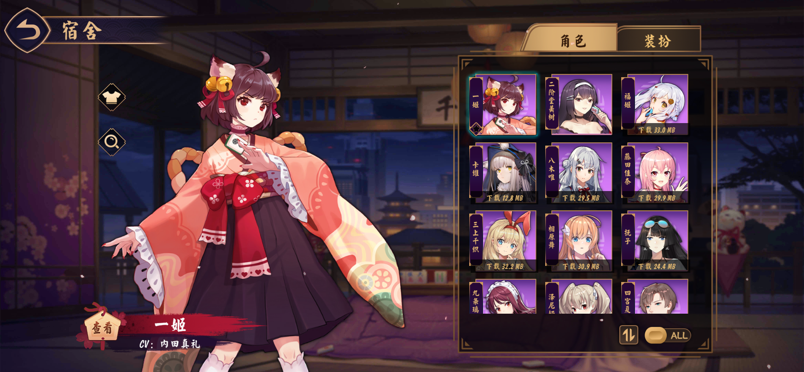
角色与装扮同款未下载提示条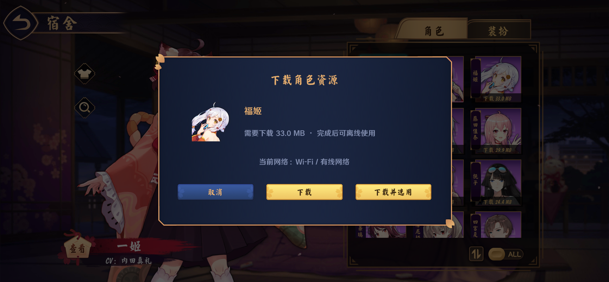
同款角色下载弹窗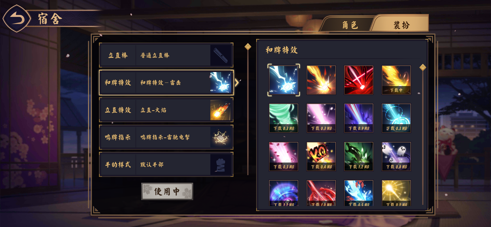
只给主动选择的特效标记下载中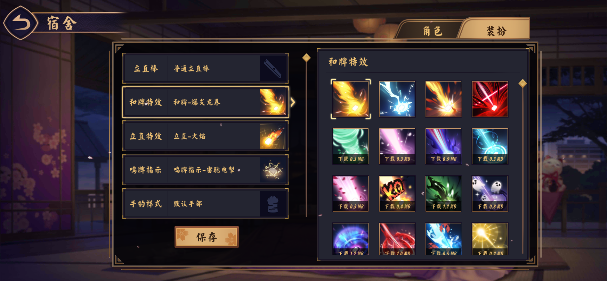
已下载装扮优先排列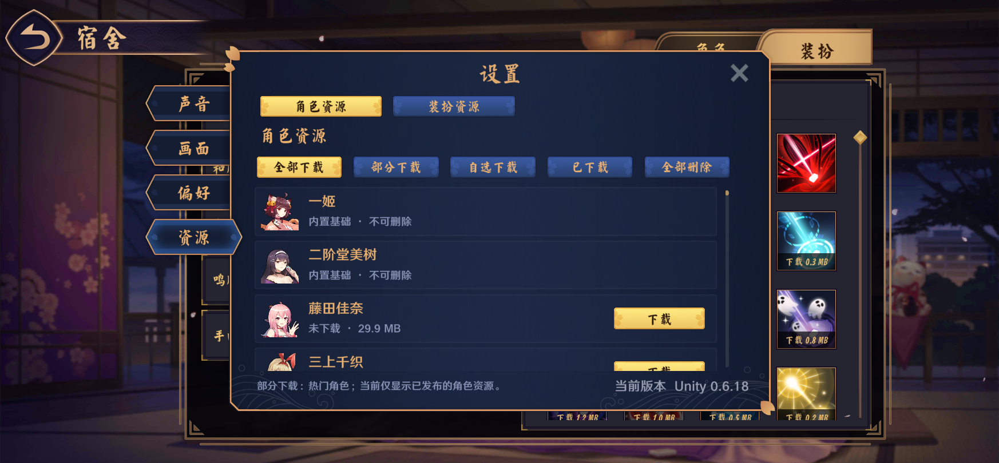
角色资源页尺寸基准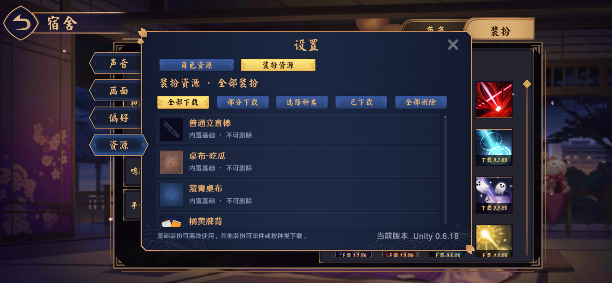
装扮资源页复用相同尺寸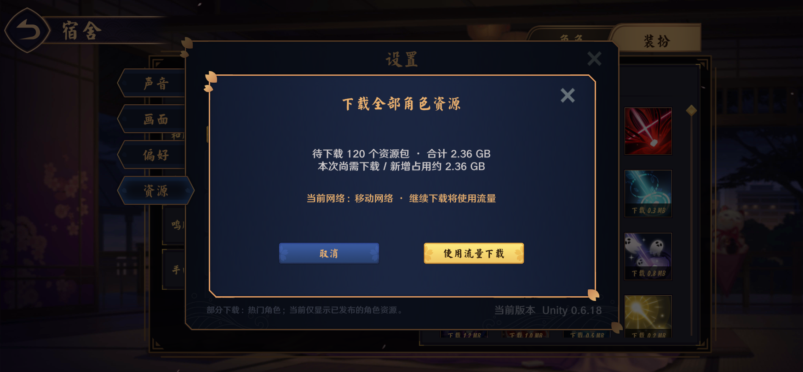
全部下载的空间和移动网络提示部分下载同样确认空间与网络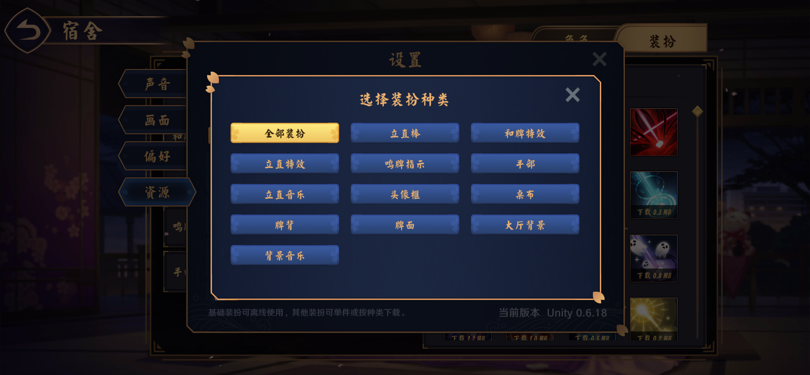
选择种类弹窗使用 × 关闭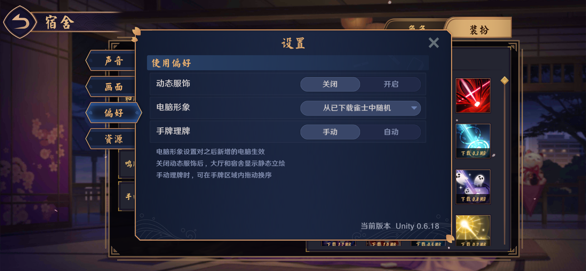
两类偏好复用相同分段开关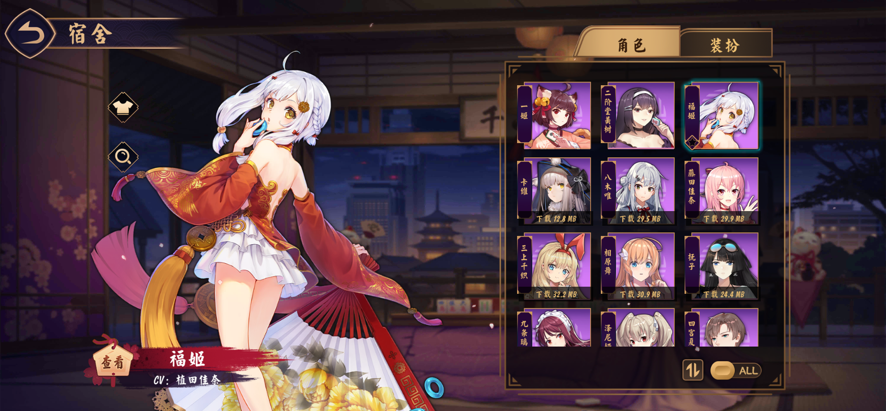
真实角色下载并选用成功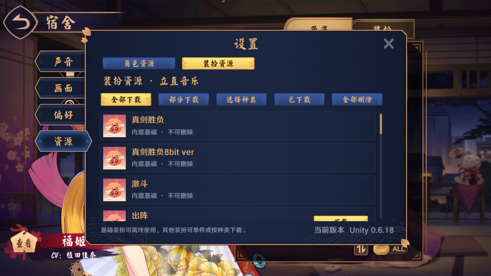
16:9 下的列表尺寸核对运行验证 · 空间与覆盖范围明细